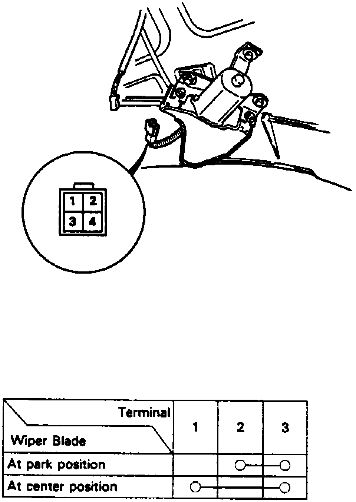

Rear Window Motor Test
1. Remove hatch trim panel.Fig. 11 Rear Wiper Motor Connector:

2. Disconnect rear wiper motor electrical connector, Fig. 11.
3. Connect positive battery voltage to terminal No. 2 and negative to terminal No. 4 motor should operate properly.
4. If operation is not as indicated, replace motor.